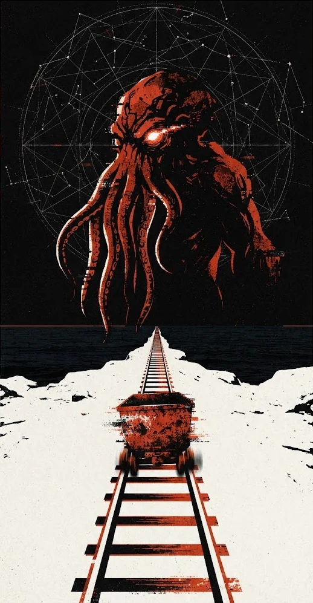

N°1963 — 23:58 — 沿 鐵 軌 往 下 游 — 不 要 回 頭
鏽軌逃生
RUST
RAIL
RUNA CTHULHU
DREAM LINE
礦車不能停 ✶ 別回頭 ✶ 祂在作夢 ✶ PH'NGLUI MGLW'NAFH CTHULHU R'LYEH WGAH'NAGL FHTAGN ✶ 換你了 ✶ 礦車不能停 ✶ 別回頭 ✶ 祂在作夢 ✶ PH'NGLUI MGLW'NAFH CTHULHU R'LYEH WGAH'NAGL FHTAGN ✶ 換你了 ✶